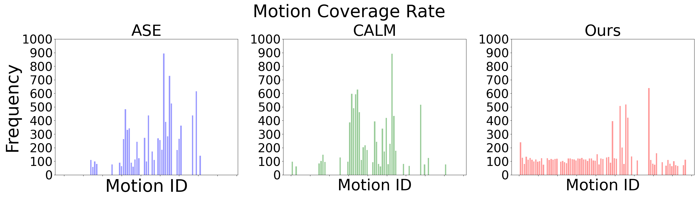

C·ASE: Learning Conditional Adversarial Skill Embeddings for Physics-based Characters


Abstract
Our framework enables physically simulated characters to master highly varied and extensive skills with high efficiency and effectiveness. Notably, it offers an explicit control handle for directly specifying the desired skill from a diverse and extensive set of skills. Here, a character is instructed by the user to perform a sequence of skills, including kick, jump attack, sword bash, shield bash, and finally, roaring.
We present C·ASE, an efficient and effective framework that learns conditional Adversarial Skill Embeddings for physics-based characters. Our physically simulated character can learn a diverse repertoire of skills while providing controllability in the form of direct manipulation of the skills to be performed. C·ASE divides the heterogeneous skill motions into distinct subsets containing homogeneous samples for training a low-level conditional model to learn conditional behavior distribution. The skill-conditioned imitation learning naturally offers explicit control over the character's skills after training. The training course incorporates the focal skill sampling, skeletal residual forces, and element-wise feature masking to balance diverse skills of varying complexities, mitigate dynamics mismatch to master agile motions and capture more general behavior characteristics, respectively. Once trained, the conditional model can produce highly diverse and realistic skills, outperforming state-of-the-art models, and can be repurposed in various downstream tasks. In particular, the explicit skill control handle allows a high-level policy or user to direct the character with desired skill specifications, which we demonstrate is advantageous for interactive character animation.
Framework
Our framework contains three stages: the pre-training, interactive controller training, and interactive character animation stages. During pre-training, a low-level policy $\pi$ learns conditional adversarial skill embeddings from a diverse and extensive motion dataset, followed by more high-level policies $\pi$ trained to allow interactive control of the character. Last, during the interactive character animation stage, users can interactively animate the character in various manners, possibly with desired skills.
Low-level Conditional Policy
Conditional Skill Embeddings
C·ASE enables the physically simulated character to perform skills specified by skill labels and transition latent codes.
Filtered Motion Coverage Rate
Comparison of the motion coverage. The coverage rate of ASE and CALM falls dramatically with an increasing filtering rate, implying a serious imbalance of the coverage, whereas ours consistently produces high coverage rates.
(a) No filtering.
(a) Filtering rate $= 50\%$.
Frequencies at which the low-level policy produces motions that match all 87 individual clips. We show distributions produced by the filtering rate of $0\%$ and $50\%$ here. Compared to ASE and CALM, our method produces diverse motions that much more evenly cover all reference clips.
Motion Diversity
Motion variations (three colored in red, blue, and green are shown) are shown for each skill category. We test with the Sword&Shield dataset.
Skill Transition Coverage
Transition coverage and probability between different skills. We show all 87 motion clips in the Sword\&Shield dataset. Our model achieves a higher coverage rate and more even transition probability distribution compared with ASE and CALM.
Interactive Character Animation
Path-follower
Path-follower: the character faithfully follows user-specified paths (blue path) under various specified skills, including jog, march, walk, sidewalk, run, slow walk, open-armed walk, patrol, and confident strut; More results are presented in the supplementary video.
Directional Control
Directional Control: the character faithfully follows user-specified local moving direction (blue arrow) under various specified skills, including walk, stooped run, stride, casual walk, hands-up walk, and march; See more results in the supplementary video.
Character Re-locating
Character Re-locating: the character re-locates to a user-specified target location (visualized by the blue disks on the ground and arrows in the air) with different specified skills, including walk, limping, patrol, run, foot-sliding walk, and quick walk; More results can be found in the supplementary video.
Check out our paper for more details.
Citation
@article{dou2022case,
title={C·ASE: Learning Conditional Adversarial Skill Embeddings for Physics-based Characters},
author={Zhiyang Dou and Xuelin Chen and Qingnan Fan and Taku Komura and Wenping Wang},
journal={arXiv preprint arXiv:2309.11351},
year={2023}
}